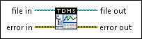

TDMS File Viewer VI
Owning Palette: TDM Streaming VIs and Functions
Requires: Base Development System
Opens the .tdms file specified in the file in input and presents the file data in the TDMS File Viewer dialog box.

 Add to the block diagram Add to the block diagram |
 Find on the palette Find on the palette |